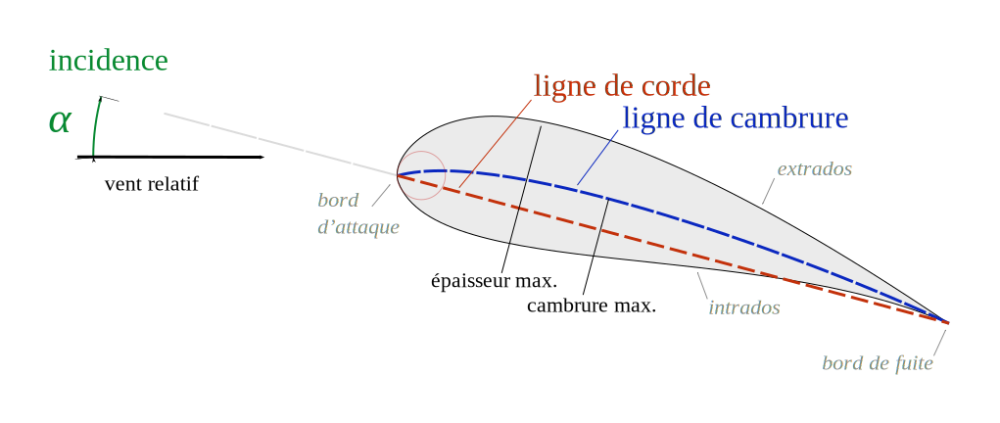

Effet doppler
L'effet Doppler, ou effet Doppler-Fizeau, est le décalage de fréquence d’une onde (mécanique, acoustique, électromagnétique ou d’une autre nature) observé entre les mesures à l’émission et à la réception, lorsque la distance entre l’émetteur et le récepteur varie au cours du temps. Si on désigne de façon générale ce phénomène physique sous le nom d'effet Doppler, le nom d'« effet Doppler-Fizeau » est réservé aux ondes électromagnétiques.
Détermination de l’expression de la vitesse d’un émetteur sonore qui s’approche
La valeur de la vitesse d’un émetteur ($E$) s’approchant d’un observateur immobile ($A$) peut être calculée par effet Doppler. L’étude est effectuée dans le référentiel dans lequel l’observateur est immobile.
On se propose de retrouver la relation liant les diverses grandeurs mises en jeu :
- $f_E$ est la fréquence du signal produit par l’émetteur ;
- $f_A$ est la fréquence du signal reçu par l’observateur ;
- $V$ est la valeur de la vitesse de l’onde par rapport à l’observateur immobile ;
- $V_E$ est la valeur de la vitesse de l’émetteur par rapport à l’observateur immobile.
- À la date $t= 0$, $E$ est à la distance $d$ de $A$ et émet une onde.
Exprimer littéralement la date $t_1$ au bout de laquelle le signal est perçu par $A$.
Réponse
La date $t_1$ est le retard avec lequel l’onde parvient en $A$, donc $t_1 = \dfrac{d}{V}$.
- Déterminer l’expression de la distance $d_E$ parcourue par l’émetteur pendant la période $T_E$ du signal émis.
Réponse
L’émetteur se déplace à la vitesse $V_E$, donc au bout de $T_E$ secondes $d_E = V_E T_E$.
- À la date $T_E$, quelle est la distance $d_2$ entre $E$ et $A$ ?
Réponse
Puisque pendant la durée $T_E$, l’émetteur parcourt la distance $d_E$, la distance entre $E$ et $A$ à la date $t_2 = T_E$ est $d_2 = d - d_E = d - V_E T_E$.
Il faut retrancher la distance $d_E$ à $d$ car $E$ se rapproche de $A$.
- À la date $T_E$, l’émetteur émet de nouveau une onde. À quelle date $t_3$, l’observateur reçoit-il cette onde ?
Réponse
L’onde que reçoit l’observateur à la date $t_3$ a été émise à la date $t_2$ et a parcouru la distance $d_E$. Donc $t_3 = T_E + \dfrac{d_E}{V} = T_E + \dfrac{d - V_E T_E}{V}$.
- Quelle est la durée $T_A$ séparant deux signaux consécutifs captés par l’observateur ?
Que représente $T_A$ ?
Réponse
Si on note $\Delta t$ la durée qui sépare deux signaux consécutifs captés par l’observateur, $\Delta t = t_3 - t_1 = T_E + \dfrac{d - V_E T_E}{V} - \dfrac{d}{V} = T_E (1 - \dfrac{V_E}{V})$.
$\Delta t = T_A$ est la période du signal perçue par l’observateur, donc $$ T_A = T_E (1 - \dfrac{V_E}{V})$$
- Exprimer la relation liant $f_A$, $f_E$, $V$ et $V_E$ dans cette situation.
Réponse
Puisque $T_A = \dfrac{1}{f_A}$ et $T_E = \dfrac{1}{f_E}$, $$ f_A = \dfrac{f_E}{1 - \dfrac{V_E}{V}}$$
- Comparer $f_A$ et $f_E$.
Réponse
$V_E < V$ donc $\dfrac{V_E}{V} < 1$ et $0 < 1 - \dfrac{V_E}{V} < 1$. On en déduit que $f_A = \dfrac{f_E}{1 - \dfrac{V_E}{V}} > f_E$.
- Quelle est l’expression littérale de la valeur de la vitesse $V_E$, de l’émetteur ?
Réponse
On déduit de l’expression précédente que $$V_E = V \left(1 - \dfrac{f_E}{f_A} \right)$$
Lorsque qu’un émetteur sonore $E$ s’approche d’un observateur $A$, la fréquence du signal perçu par cet observateur est $$f_A = \dfrac{f_E}{1 - \dfrac{V_E}{V}} > f_E$$ où
- $f_E$ est la fréquence du signal produit par l’émetteur ;
- $f_A$ est la fréquence du signal reçu par l’observateur ;
- $V$ est la valeur de la vitesse de l’onde par rapport à l’observateur immobile ;
- $V_E$ est la valeur de la vitesse de l’émetteur par rapport à l’observateur immobile.
Le signal perçu par $A$ est plus aigü que le signal émis.
Détermination de l’expression de la vitesse d’un émetteur sonore qui s’éloigne
La valeur de la vitesse d’un émetteur ($E$) s’éloignant d’un observateur immobile ($B$) peut être calculée par effet Doppler. L’étude est effectuée dans le référentiel dans lequel l’observateur est immobile.
On se propose de retrouver la relation liant les diverses grandeurs mises en jeu :
- $f_E$ est la fréquence du signal produit par l’émetteur ;
- $f_B$ est la fréquence du signal reçu par l’observateur ;
- V est la valeur de la vitesse de l’onde par rapport à l’observateur immobile ;
- $V_E$ est la valeur de la vitesse de l’émetteur par rapport à l’observateur immobile. Les valeurs des vitesses sont mesurées dans un référentiel terrestre et $V_E \ll V$.
- À la date $t=0$, $E$ est à la distance $d$ de $B$ et émet une onde. Exprimer littéralement la date $t_1$ au bout de laquelle le signal est perçu par $B$.
Réponse
La date $t_1$ est le retard avec lequel l’onde parvient en $B$, donc $t_1 = \dfrac{d}{V}$.
- Déterminer l’expression de la distance $d_E$ parcourue par l’émetteur pendant la période $T_E$ du signal émis.
Réponse
L’émetteur se déplace à la vitesse $V_E$, donc au bout de $T_E$ secondes $d_E = V_E T_E$.
- À la date $T_E$, quelle est la distance $d_2$ entre $E$ et $B$ ?
Réponse
Puisque pendant la durée $T_E$, l’émetteur parcourt la distance $d_E$, la distance entre $E$ et $A$ à la date $t_2 = T_E$ est $d_2 = d + d_E = d + V_E T_E$.
Il faut ajouter la distance $d_E$ à $d$ car $E$ s’éloigne de $B$.
- À la date $T_E$, l’émetteur émet de nouveau une onde. À quelle date $t_3$ l’observateur reçoit-il cette onde ?
Réponse
L’onde que reçoit l’observateur à la date $t_3$ a été émise à la date $t_2$ et a parcouru la distance $d_E$. Donc $t_3 = T_E + \dfrac{d_E}{V} = T_E + \dfrac{d + V_E T_E}{V}$.
- Quelle est la durée $T_B$ séparant deux signaux consécutifs captés par l’observateur ? Que représente $T_B$ ?
Réponse
Si on note $\Delta t$ la durée qui sépare deux signaux consécutifs captés par l’observateur, $\Delta t = t_3 - t_1 = T_E + \dfrac{d + V_E T_E}{V} - \dfrac{d}{V} = T_E (1 + \dfrac{V_E}{V})$.
$\Delta t = T_B$ est la période du signal perçue par l’observateur, donc $$ T_B = T_E (1 + \dfrac{V_E}{V})$$
- Exprimer la relation liant $f_B$, $f_E$, V et $V_E$ dans cette situation.
Réponse
Puisque $T_B = \dfrac{1}{f_B}$ et $T_E = \dfrac{1}{f_E}$, $$ f_B = \dfrac{f_E}{1 + \dfrac{V_E}{V}}$$
- Comparer $f_B$ et $f_E$.
Réponse
$1 + \dfrac{V_E}{V}} > 1$. On en déduit que $f_B = \dfrac{f_E}{1 + \dfrac{V_E}{V}} < f_E$.
- Quelle est l’expression littérale de la valeur de la vitesse $V_E$ de l’émetteur ?
Réponse
On déduit de l’expression précédente que $$V_E = V \left( \dfrac{f_E}{f_B} - 1 \right)$$
Lorsque qu’un émetteur sonore $E$ s’éloigne d’un observateur $B$, la fréquence du signal perçu par cet observateur est $$f_B = \dfrac{f_E}{1 + \dfrac{V_E}{V}} < f_E$$ où
- $f_E$ est la fréquence du signal produit par l’émetteur ;
- $f_B$ est la fréquence du signal reçu par l’observateur ;
- $V$ est la valeur de la vitesse de l’onde par rapport à l’observateur immobile ;
- $V_E$ est la valeur de la vitesse de l’émetteur par rapport à l’observateur immobile.
Le signal perçu par $B$ est plus grave que le signal émis.
Application
L’objectif de cette partie est de mettre en œuvre un raisonnement permettant de déterminer la vitesse d’une moto dont on possède un enregistrement sonore.
-
Télécharger le fichier son : Enregistrement sonore
-
Ouvrir le fichier son à l’aide du logiciel Audacity et l’écouter.
-
En raisonnant sur les fréquences (hauteur des sons) justifier que la moto s’approche dans un premier temps puis s’éloigne.
Réponse
La fréquence (ou hauteur) du son est initialement plus élevée (son plus aigü) qu’au final (son plus grave). On peut donc en conclure que la moto se rapproche puis s’éloigne.
- À l’aide du logiciel, effectuer un zoom sur l’enregistrement dans la zone temporelle située entre $\pu{3,2 s}$ et $\pu{3,8 s}$. Le signal est-il périodique ?
Réponse
On observe des motifs qui se répètent identiques à eux-mêmes dans le temps. Le signal est périodique.
- Déterminer la fréquence du signal dans cette zone. La noter $f_A$.
Réponse
$f_A = \pu{248 Hz}$
- Effectuer maintenant un zoom sur l’enregistrement dans la zone temporelle située entre $\pu{4,2 s}$ et $\pu{4,6 s}$. Le signal est-il périodique ?
Réponse
On observe des motifs qui se répètent identiques à eux-mêmes dans le temps. Le signal est périodique.
- Déterminer la fréquence du signal dans cette zone. La noter $f_B$.
Réponse
$f_B = \pu{221 Hz}$
- En utilisant les expressions démontrées dans les parties 1. et 2. de ce document donner l’expression algébrique de la vitesse de l’émetteur (la moto) en fonction des fréquences $f_A$ et $f_B$.
Calculer la valeur de la vitesse de la moto.
Réponse
$ f_A = \dfrac{f_E}{1 - \dfrac{V_E}{V}} \Leftrightarrow f_E = f_A \left( 1 - \dfrac{V_E}{V} \right)$ et $f_B = \dfrac{f_E}{1 + \dfrac{V_E}{V}} \Leftrightarrow f_E = f_B \left( 1 + \dfrac{V_E}{V} \right)$, donc $ f_A \left( 1 - \dfrac{V_E}{V} \right) = f_B \left( 1 + \dfrac{V_E}{V} \right)$ et finalement $$V_E = V\, \dfrac{f_A - f_B}{f_A + f_B}$$
A.N. $V_E = \pu{340 m/s} \times \dfrac{\pu{248 Hz} - \pu{221 Hz}}{\pu{248 Hz} + \pu{221 Hz}} = \pu{19,6 m/s} = \pu{70,5 km/h}$.
Culture : Le bang supersonique
L’explication
Des exemples spectaculaires
Le double bang
Lorsque la vitesse d’un avion augmente, à partir d’une vitesse supérieure à celle des ondes sonores dans le milieu, l’onde de choc tend à reculer jusqu’au bord de fuite des ailes et il se forme une nouvelle onde de choc sur le bord d’attaque (et au niveau du museau). Il se forme donc bien deux ondes de choc.
Ceci dit, ces deux ondes sont reçues au niveaux de nos oreilles avec des retards tellement proches que celles-ci sont incapables de la distinguer.

En fait le double bang que l’on entend parfois est provoqué par des modifications brutales (accélération, virage, etc.) du vol de l’avion.